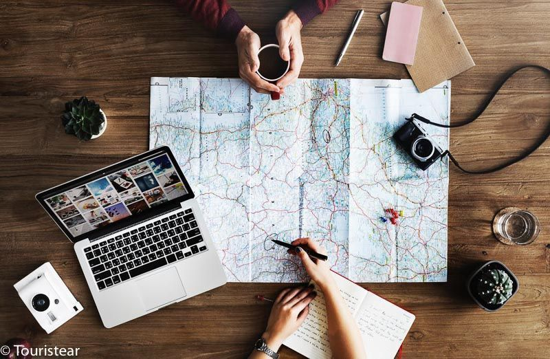

La mejor epoca para viajar a Francia
La mejor epoca para viajar a Francia va desde abril a junio y desde principio de septiembre a noviembre. Como ventaja, no hay tantos visitantes y las temperaturas son moderadas en comparacion con el clima sofocante del verano. Si esquiar es lo tuyo, disfruta de los centros de esqui desde diciembre hasta abril. Gracias al clima mediterraneo de la Costa Azul, puedes disfrutar de temperaturas calidas la mayor parte del año, mientras que en Paris, le invierno te da la oportunidad de disfrutar de visitas culturales, como el Louvre,con menos cola.
Como armar el itinerario a tu medida
El paso a paso que te proponemos, es una herramienta bastante dinamica,que no pretende ser una biblia que deberas seguir si o si en ese orden, sino mas bien,como una guia de tareas, que tiene como principial objetivo es ordenar el proceso y no dejar ningun detalle librado al azar. Definir la fecha de viaje Es un gran punto de partida para empezar a armar un itinerario de viaje, podemos eligar en que epoca del año viajar. Y tener esa posibilidad esta buenisimo, porque sera un viaje completamente diferente segun la epoca del año en la que decidas viajar. Hacer una lista de los lugares que te gustaria visitar Incluye todos los lugares que te gustaria visitar. No importa si al principio te parecen demasiadas,o si estan muy lejos una de otras o, si simple vista, te parece que por alguna razon no son compatibles.
Todo lo que tienes que tener en tu maleta
Probablemente pienses que hacer el equipaje es algo facil. Es por eso que queremos dejarte un listo de cosas que no pueden faltar en tu equipaje, que puedes ir utilizando a modo check list. Ropa y calzado no pueden faltar en tu equipaje, pero conviene tener en cuenta que no cualquier tipo de ropa es la mejor para viajar. Neceser y medicamentos, al igual que productos de higiene. Documentacion, es otra de las cosas mas importantes. Llevar la documentacion en un lugar seguro.
Formulario De Reclamos
Para formalizar tu reclamo te pedimos que completes los siguientes datos
Te propocionamos la informacion de contacto para comunicarte con nosotros
- Teléfono: 11 - 35267654
- Email: soporte@turismoparis.com